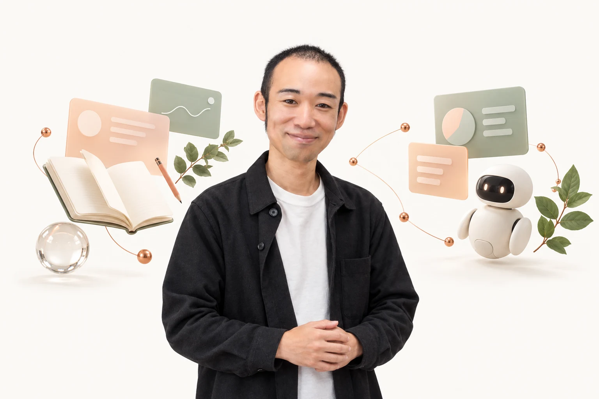
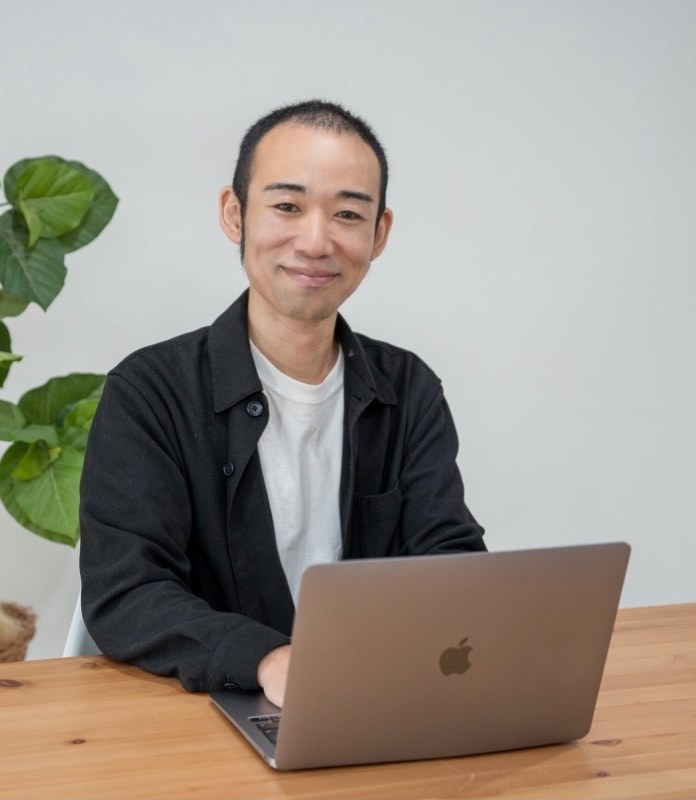

事業者・チームの方へ
AI現場伴走室
AI AT WORK
記録、申し送り、研修資料。介護・医療・福祉の現場で、AIをどう使うか。毎日の仕事を聞きながら、明日から使える形まで一緒に考えます。
AI現場伴走室を見る
TWO WAYS TO START
仕事にAIを取り入れたい。
自分の強みをもっと知りたい。
気になる入口から、のぞいてみてください。
事業者・チームの方へ
AI AT WORK
記録、申し送り、研修資料。介護・医療・福祉の現場で、AIをどう使うか。毎日の仕事を聞きながら、明日から使える形まで一緒に考えます。
AI現場伴走室を見る自分の強みを知りたい方へ
KNOW YOUR STRENGTHS
「診断を受けたけれど、そのままになっている」。資質の名前を覚えるだけでなく、自分の言葉で読み解くところへ。自己理解の入口を、身構えずに読めるページにしました。
ストレングス入門を見る セッションについてはこちら →BUILT WITH CLAUDE
道具も、教材も、この会社の回し方も。Claude Code と一緒につくって、いま実際に使っているものと、Claude API でつくり始めた試作を並べました。
What we build with Claude: kits, tools and agents made with Claude Code and in use today (01–04), and our first Claude API product, in progress (05).
公開・配布中 / Live
Pop-up Picture Book Movie Kit
題材を書いて Claude Code に頼むと、紙の絵本がひらいてキャラクターが跳ねる、語りと音つきの短い動画ができます。お手本の動画、貼るだけの頼み文、Claude Code のスキルを1枚のページにまとめて配っています。
A downloadable Claude Code skill that turns a short brief into a narrated pop-up picture book video. Anyone can run it in their own Claude Code.
Used by: shop owners, classrooms and nursery schools making announcement videos, and participants in our meetups.
キットを見る / Open the kit (in Japanese)公開中 / Live
Motion Recipe
ふだんの言葉を1行書くと、Claude Code（Opus 5.5）にそのまま貼れる動画の注文書に組み立てるアプリです。同じやり方でつくったモーショングラフィックを、お手本として60本以上並べています。
A web app that turns one line of plain Japanese into a ready-to-paste prompt for Claude Code (Opus 5.5), with a gallery of 60+ motion graphics made the same way.
Used by: AI beginners starting to make videos, and small shops and classes making announcements.
アプリを開く / Open the app (in Japanese)社内で毎日稼働 / Internal, in daily use
AI executive team (internal)
CEO・技術・商品・発信・経理・営業。役割と口調を持った Claude Code のエージェントたちが、記録、タスク、下準備、納品物づくりを手分けしています。一人で事業をしている私が、自分を経由しなくても仕事が進むようにするための仕組みです。
Our own operations run on a team of Claude Code agents (CEO, tech, product, marketing, finance and sales roles), wired together with skills, hooks, MCP servers and scheduled jobs.
Used by: internal; used by the founder to run the company every day. Not sold as a product; clients receive the deliverables it helps prepare.
しくみの記録を読む（2026年5月時点） / How it works (in Japanese)提供中 / In service
Personalized client manuals
自己理解のセッションの記録から、その人だけの「取扱説明書」ページや振り返りシートをつくります。セッション前の準備から、終わったあとの納品、お届けの文面まで、Claude Code のスキルでひと続きにしています。
Claude Code skills that turn a coaching session transcript into a personalized web "user manual" for each client.
Used by: clients of our strengths (self-understanding) coaching sessions.
セッションの案内を見る / About the sessions (in Japanese)お客さまのページは本人だけが見られる形でお渡ししているため、ここには載せていません。
試作中（AI 接続前） / Prototype (API connection pending)
Care-record drafting demo
夜勤明けの申し送りメモを入れると、施設の記録様式（日付・利用者・バイタル・食事・排泄・特記・申し送り先）の各欄に下書きが入る、という試作です。職員が読み直して直し、確定する前提です。メモに無いことは「記載なし」と残し、確かめてほしい点を横に並べます。研修先の職場で、申し送りの下書きを自分たちでつくる練習から始めています。
Our first product on the Claude API (in progress): staff paste a shift-handover note, and Claude (Sonnet 5.5) drafts each field of the facility's own care-record form for them to review and confirm. Synthetic data only. The form and screens are built; until the API key is connected, the demo returns sample responses.
Used by (planned): care and healthcare staff who write care records and shift handovers, starting with the workplace we train. Next 30 days: connect the Claude API, test it on synthetic notes, then trial it with that workplace.
デモを開く（合言葉付き） / Open the demo (password required)デモは合言葉付きです（研修先・お問い合わせの方にお渡しします）。The demo is password-protected; access is available on request.
IN THE FIELD
介護・医療の職場での研修と、AIを使える人を増やす勉強会。どちらも続けています。
A paid AI training program for a healthcare workplace, and 50+ community meetups centered on Claude Code.
全6回
医療法人の健康管理部門で、2026年9月から半年かけて進めています。個人情報を入れない線引きから始めて、会議録や申し送りの下書きを職員さん自身がつくれるところまで。ChatGPT・Claude・NotebookLM の使い分けも、実際の仕事を題材にしています。
Paid 6-session AI training for a healthcare organization's occupational-health team, started in September 2026.
50回以上
会員制コミュニティ「リベシティ」の大阪・神戸・東京のオフィスと、オンラインで。初めて触る人も、その場で手を動かせる進め方にしています。
50+ hands-on meetups centered on Claude Code, in Osaka, Kobe, Tokyo and online.
毎週
1時間のオンラインの会です。試してみたことや、つくったものを、気軽に持ち寄って見せ合えます。
A weekly online "AI radio" session every Wednesday night.
1,000人超
参加者が1,000人を超えたチャットで、管理人の一人として質問や「できた！」の報告を受け止めています。
Co-moderating an AI beginners' support chat with 1,000+ members.
勉強会やチャットの参加者が、AIでつくった作品を自分で投稿できる棚です。
A community gallery where participants publish what they built with AI.

HELLO, I'M OKEMON
はじめまして。介護・障害福祉の現場に16年いた、おけもんです。介護職員、サービス管理責任者、施設長として働いてきました。
夜勤明けの記録も、管理者として抱える悩みも。その現場を知っているからこそ、使う人の言葉で、一緒に考えたいと思っています。
いまはAIの導入と、強みの読み解きを仕事にしています。このホームページも、AIと一緒に試しながらつくっています。
SELECTED WORKS
AIの活用を伝えるページから、
その人らしさが伝わるホームページまで。
COMPANY
一人で始めた小さな事業です。
ご相談や取材のときの手がかりにどうぞ。
ENGLISH SUMMARY
Okemon Company (trade name: Watashi Torisetsu) is a sole proprietorship founded in 2024 in Kobe, Japan, by Okemon (Kenjiro Mimata), who worked for 16 years in elder care and disability services as a care worker, service manager and facility director.
What we build with Claude:
In the field, we deliver a paid six-session AI training program for a healthcare workplace (started September 2026), have hosted 50+ meetups centered on Claude Code, and run a weekly online AI session.
LET'S TALK
「何も決まっていない」でも大丈夫。
AIのことでも、自分の強みのことでも。
いま気になっていることを、聞かせてください。
オンラインで30分〜1時間。相談は無料です。